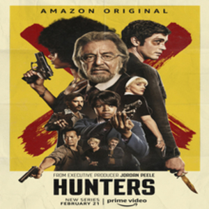

Hunters
Gênero: policial
Sinopse: Nos anos 1970, um grupo de caçadores de nazistas descobre que a criação de um Quarto Reich está sendo planejada em Nova York. Em busca de justiça e vingança, essa equipe parte para a ação, a fim de evitar que o pior aconteça.
Elenco
- Al Pacino como Meyer Offerman, um filantropo e sobrevivente do Holocausto que lidera a equipe;
- Zack Schor como o jovem Meyer;
- Logan Lerman como Jonah Heidelbaum, um jovem matemático que ocupa o lugar de sua avó na equipe;
- Lena Olin como o Coronel , líder do quarto Reich;